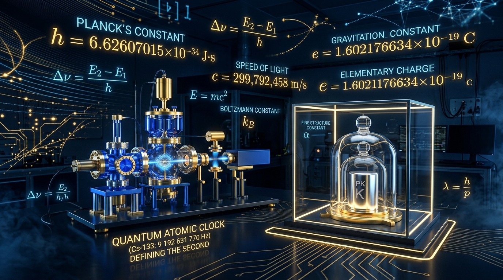

The 2019 SI Redefinition: Anchoring Metrology to the Fabric of the Universe

The 2019 redefinition marked the biggest shift in metrology since the French Revolution. Before May 20, 2019, several units still relied on human-made physical objects. Most famously, the kilogram was defined by the International Prototype of the Kilogram (IPK or “Le Grand K”)—a cylinder of platinum-iridium kept under lock and key in a vault near Paris.
Today, all seven SI base units are anchored to exact, fixed values of fundamental natural constants. Here is how key constants define their corresponding base units:
- ⏱️ Second (\(\text{s}\)): Defined by the unperturbed ground-state hyperfine transition frequency of the caesium-133 atom (\(\Delta\nu_{\text{Cs}} = 9{,}192{,}631{,}770\text{ Hz}\)).
- 📏 Meter (\(\text{m}\)): Defined by taking the fixed numerical value of the speed of light in vacuum (\(c = 299{,}792{,}458\text{ m/s}\)).
- ⚖️ Kilogram (\(\text{kg}\)): Defined by taking the fixed numerical value of the Planck constant (\(h = 6.62607015 \times 10^{-34}\text{ J}\cdot\text{s}\), or \(\text{kg}\cdot\text{m}^2/\text{s}\)).
- ⚡ Ampere (\(\text{A}\)): Defined by fixing the elementary charge (\(e = 1.602176634 \times 10^{-19}\text{ C}\), or \(\text{A}\cdot\text{s}\)).
- 🌡️ Kelvin (\(\text{K}\)): Defined by fixing the Boltzmann constant (\(k = 1.380649 \times 10^{-23}\text{ J/K}\)).
- 🧪 Mole (\(\text{mol}\)): Defined by fixing the Avogadro constant (\(N_{\text{A}} = 6.02214076 \times 10^{23}\text{ mol}^{-1}\)).
- 🕯️ Candela (\(\text{cd}\)): Defined by fixing the luminous efficacy of monochromatic radiation of frequency \(540 \times 10^{12}\text{ Hz}\) (\(K_{\text{cd}} = 683\text{ lm/W}\)).
A Brief History of Metrology and the Path to the SI
To appreciate the 2019 redefinition, we must understand the chaotic history of human measurement. Historically, measurements were tied to local rulers, literal body parts, or agricultural yields, creating a mess of incompatible systems that hindered science and international trade.
The Imperial System and the Avoirdupois Pound
In the English-speaking world, the Imperial system evolved from Roman and Anglo-Saxon roots. The standard of mass was the avoirdupois pound, originally defined in the 14th century by the weight of exactly 7,000 grains of wheat or barley. While physical brass weights were created by the British Exchequer as primary standards, they were easily lost in fires, damaged, or slowly oxidized over time.
The French Revolution and the Birth of the Metric System
Seeking a rational, universal system, French revolutionaries proposed the metric system in the 1790s. The meter was originally defined as one ten-millionth of the distance from the North Pole to the equator, and the kilogram was defined as the mass of one liter of pure water at the freezing point.
This gave rise to the CGS system (centimeter-gram-second), which became wildly popular among early physicists (like Maxwell and Gauss) for electromagnetism, though its units were too small for practical engineering. Later, the MKS system (meter-kilogram-second) superseded it, forming the direct foundation for the modern International System of Units (SI).
The Creation of Le Grand K (IPK)
Realizing that “the mass of a liter of water” was too difficult to measure with high precision, scientists commissioned the International Prototype of the Kilogram (IPK) in 1889. Known as Le Grand K, it was a solid cylinder forged from an alloy of 90% platinum and 10% iridium (to prevent oxidation and ensure hardness). Housed in the BIPM vaults in Sèvres, France, this single hunk of metal served as the absolute definition of mass for the entire planet for 130 years.
The Problem with Physical Artifacts
While seemingly stable, relying on a physical object like the IPK for a worldwide standard presented severe practical risks and scientific paradoxes:
- Mass Drift and Contamination: Over decades, the cylinder slowly accumulated microscopic contaminants from the air (hydrocarbons, mercury vapor).
- The Cleaning Paradox: To remove contaminants, scientists used the “BIPM cleaning method” (rubbing it with chamois leather soaked in alcohol and ether). This inevitably scrubbed away microscopic layers of the platinum-iridium itself, altering its mass.
- Diverging Copies: The IPK had dozens of official “sister” copies distributed around the world. Over a century, measurements showed that the masses of the copies were diverging from the IPK by up to 50 micrograms. Because the IPK was by definition exactly one kilogram, its mass could technically never change. This created an absurd scientific reality: if the IPK was gaining mass from contamination or losing it from cleaning, the entire rest of the universe was theoretically shifting in mass to accommodate it.
- Vulnerability and Accessibility: A single physical standard is vulnerable to theft, war, or natural disaster. Furthermore, countries had to physically transport their national prototypes to Paris for calibration, risking damage during transit.
By redefining the kilogram using Planck’s constant, any laboratory in the universe can now build an instrument (like a Kibble balance) to measure exactly one kilogram without needing to compare it to a piece of metal in France.
Hyperfine Transition Frequency (\(\Delta\nu_{\text{Cs}}\))
The phrase “hyperfine transition frequency” comes directly from atomic quantum mechanics. In a neutral caesium-133 atom (\(^{133}\text{Cs}\)), there is a single valence electron orbiting a nucleus. Both the nucleus and the electron possess intrinsic spin angular momentum:
- The \(^{133}\text{Cs}\) nucleus has nuclear spin \(I = 7/2\).
- The outer valence electron has spin \(S = 1/2\).
The magnetic dipole moment of the electron interacts with the magnetic field produced by the nuclear magnetic dipole moment (spin-spin coupling). This magnetic interaction splits the ground state (\(6^2S_{1/2}\)) into two distinct energy levels characterized by the total angular momentum quantum number \(F = I + S\):
- Lower state: \(F = 4 - 1/2 = 3\)
- Upper state: \(F = 4 + 1/2 = 4\)
\[\Delta E = E(F=4) - E(F=3)\]
By the Planck-Einstein relation, a transition between these two states emits or absorbs a photon whose frequency is fixed strictly by this energy gap:
\[\nu = \frac{\Delta E}{h} = 9{,}192{,}631{,}770\text{ Hz}\]
In a caesium atomic fountain clock, laser-cooled caesium atoms are tossed upward into a microwave cavity. Microwaves are tuned until the transition rate between \(F=3\) and \(F=4\) is maximized. Exactly \(9{,}192{,}631{,}770\) oscillation cycles of that resonant radiation define one second.
Translating Constants into Real Units: The Kibble Balance
Fixing Planck’s constant (\(h\)) allows the measurement of mass using an electromechanical device called a Kibble (watt) balance. It operates in two phases to eliminate the difficult-to-measure geometry of the coil:
1. Weighing Mode: A test mass \(m\) rests on a coil of wire length \(L\) suspended in a radial magnetic field \(B\). An electrical current \(I\) flows through the coil to generate an upward Lorentz force that balances gravity: \[mg = I(BL)\]
2. Velocity Mode: The mass is removed, and the coil is swept vertically through the same magnetic field at a constant velocity \(v\). By Faraday’s law, this induces a voltage across the coil terminals: \[V = v(BL) \implies BL = \frac{V}{v}\]
Substituting \(BL\) into the weighing equation yields the Kibble balance relation: \[mgv = IV\]
The mechanical power (\(mgv\)) is equated to electrical power (\(IV\)). To tie this to \(h\), the electrical quantities are measured via macroscopic quantum phenomena:
- Josephson Effect: Voltages are quantized across superconductor-insulator junctions: \[V = n \left(\frac{h}{2e}\right) f_{\text{J}}\]
- Quantum Hall Effect: Resistance is quantized in a two-dimensional electron gas: \[R_{\text{H}} = \frac{1}{p}\left(\frac{h}{e^2}\right)\]
When \(I = V'/R_{\text{H}}\), the product \(IV\) becomes directly proportional to \(h\) with the elementary charge \(e\) canceling out: \[IV = C \cdot h \cdot f_1 f_2\]
Because local gravitational acceleration \(g\), velocity \(v\), and microwave frequencies \(f_1, f_2\) are referenced to standard time and length, the mass \(m\) is measured directly in terms of \(h\).
Electrodynamics: The Shift in \(\mu_0\) and \(\varepsilon_0\)
Before 2019, the ampere was defined via Ampère’s force law between two infinite, parallel conductors, which arbitrarily set the vacuum permeability: \[\mu_0 \equiv 4\pi \times 10^{-7}\text{ H/m (exact)}\]
Under the revised SI, the elementary charge is fixed instead: \[e = 1.602176634 \times 10^{-19}\text{ C}\]
As a result, \(\mu_0\) and the vacuum permittivity \(\varepsilon_0 = 1/(\mu_0 c^2)\) are no longer fixed by definition. Instead, they depend on the dimensionless fine-structure constant \(\alpha\): \[\alpha = \frac{e^2}{2\varepsilon_0 h c} \implies \varepsilon_0 = \frac{e^2}{2\alpha h c}, \quad \mu_0 = \frac{2\alpha h}{e^2 c}\]
Because \(\alpha \approx 1/137.035999...\) must be determined through quantum electrodynamics experiments (such as electron \(g-2\) measurements), \(\mu_0\) and \(\varepsilon_0\) now carry experimental uncertainty.
Practical Applications and Impact
- Decentralized Primary Metrology: Previously, calibration chains branched outward from a single metal cylinder in France. Any laboratory with a Kibble balance or an X-ray crystal density (XRCD) setup can now realize the kilogram from scratch without calibrating against a foreign artifact.
- Relativistic Geodesy & Positioning: GNSS networks (GPS, Galileo) require clock synchronization accurate to nanoseconds. Because the definition of the second is invariant, gravitational redshift \(\Delta\nu/\nu = \Delta\Phi/c^2\) can be measured to map centimeter-level differences in Earth’s gravitational potential (geoid height).
- Direct Quantum Chips: Integrated quantum standards—such as chip-scale atomic clocks (CSACs) and NIST on a Chip (NOAC)—bring primary voltage, temperature, and frequency standards directly to manufacturing floors and defense systems.
- The Next Redefinition (Optical Clocks): Optical lattice clocks (using strontium or ytterbium) operate at frequencies \(\sim 10^{14}\text{ Hz}\)—four orders of magnitude higher than the microwave transition of caesium. They reach fractional frequency uncertainties of \(10^{-18}\) (losing one second over tens of billions of years), prompting the BIPM to prepare a redefined second based on an optical transition.
Further Viewing on the SI Redefinition
To explore how these redefining measurements were performed, check out these excellent video breakdowns: